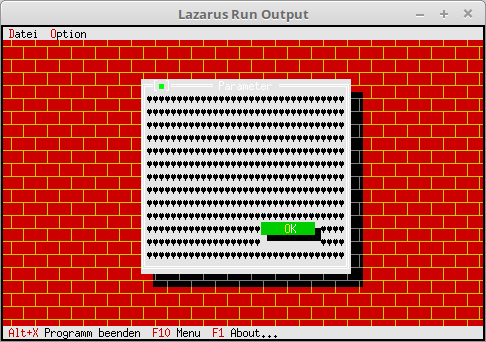

11 Optische-Gestaltung
06-Hintergrund auf Dialog

Bei Bedarf, kann man auch ein Hintergrund-Muster auf einen Dialog/Fenster legen.
Hier wird der PBackGround auf einen Dialog gelegt, dies funktioniert genau gleich, wie auf dem Desktop.
Dies kann auch der benutzerdefiniert PMyBackground sein.
procedure TMyApp.MyOption;
var
Dia: PDialog;
Rect: TRect;
begin
Rect.Assign(0, 0, 35, 15);
Rect.Move(23, 3);
Dia := New(PDialog, Init(Rect, 'Parameter'));
with Dia^ do begin
// BackGround
GetExtent(Rect);
Rect.Grow(-1, -1);
Dia^.Insert(New(PBackGround, Init(Rect, #3))); // Hintergrund einfügen.
// Ok-Button
Rect.Assign(20, 11, 30, 13);
Insert(new(PButton, Init(Rect, '~O~K', cmOK, bfDefault)));
end;
if ValidView(Dia) <> nil then begin
Desktop^.ExecView(Dia);
Dispose(Dia, Done);
end;
end;